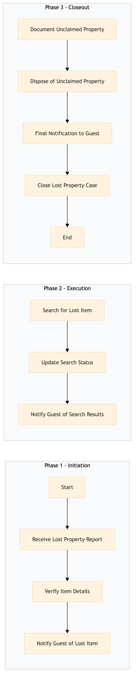

| Role | Steps |
|---|---|
| Front Desk Agent | 1.1 1.3 2.3 3.1 3.3 3.4 |
| Executive Housekeeper | 1.2 2.1 2.2 3.2 |
| Room Service Staff | 2.1 2.2 |
| Step | Name | Role | System | Input | Output | KPI | Dec? | Exc? | Pain Point / Risk |
|---|---|---|---|---|---|---|---|---|---|
| 1.1 | Receive Lost Property Report | Front Desk Agent | Oracle OPERA Cloud | Guest report of lost item | Lost property record in Oracle OPERA Cloud | Less than 3 minutes to log the report | N | Y | Handling multiple reports simultaneously |
| 1.2 | Verify Item Details | Front Desk Agent | Oracle OPERA Cloud | Lost property record | Verified lost property details | Less than 5 minutes to verify details | N | Y | Ensuring accurate item description |
| 1.3 | Notify Guest of Lost Item | Front Desk Agent | Oracle OPERA Cloud, Marriott Bonvoy CRM | Verified lost property details | Guest notification via email or phone | Less than 10 minutes to notify guest | N | Y | Ensuring timely communication |
| 2.1 | Search for Lost Item | Executive Housekeeper, Room Service Staff | Oracle OPERA Cloud | Verified lost property details | Search results and status update | Less than 30 minutes to complete search | Y | Y | Efficiently searching multiple areas |
| 2.2 | Update Search Status | Executive Housekeeper, Room Service Staff | Oracle OPERA Cloud | Search results and status update | Updated lost property record in Oracle OPERA Cloud | Less than 5 minutes to update status | N | Y | Accurate documentation of search efforts |
| 2.3 | Notify Guest of Search Results | Front Desk Agent | Oracle OPERA Cloud, Marriott Bonvoy CRM | Updated lost property record | Guest notification via email or phone | Less than 10 minutes to notify guest | N | Y | Timely communication of search outcomes |
| 3.1 | Document Unclaimed Property | Executive Housekeeper, Room Service Staff | Oracle OPERA Cloud | Unclaimed property details | Unclaimed property record in Oracle OPERA Cloud | Less than 10 minutes to document unclaimed property | N | Y | Proper documentation of unclaimed items |
| 3.2 | Dispose of Unclaimed Property | Executive Housekeeper, Room Service Staff | Oracle OPERA Cloud | Unclaimed property record | Disposed property record in Oracle OPERA Cloud | Less than 24 hours to dispose of unclaimed property | N | Y | Compliance with disposal regulations |
| 3.3 | Final Notification to Guest | Front Desk Agent | Oracle OPERA Cloud, Marriott Bonvoy CRM | Disposed property record | Guest notification via email or phone | Less than 10 minutes to notify guest | N | Y | Final communication with the guest |
| 3.4 | Close Lost Property Case | Front Desk Agent, Executive Housekeeper | Oracle OPERA Cloud | Disposed property record and final notification | Closed lost property case in Oracle OPERA Cloud | Less than 5 minutes to close the case | N | Y | Ensuring all records are updated |
The process for managing lost property at a Marriott full-service hotel involves identifying the item, documenting it, notifying the guest, and tracking its status until resolution.